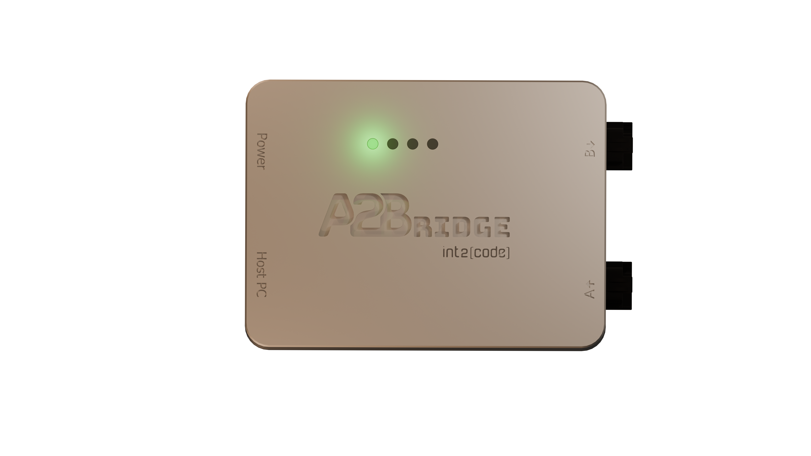
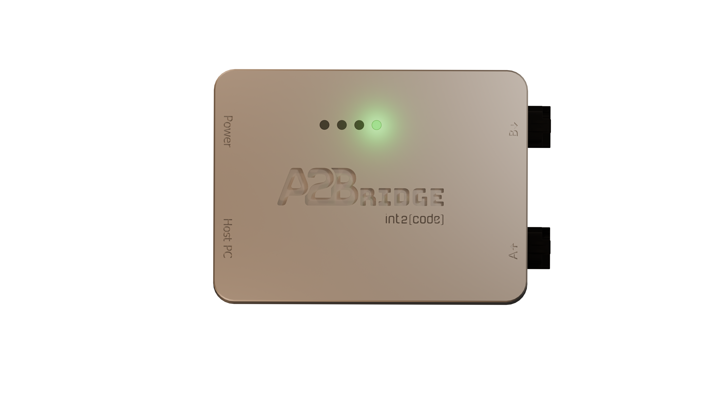
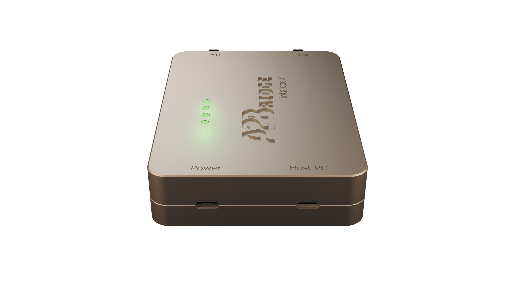
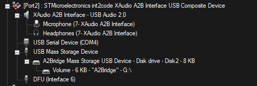

Home

Device overview
The A2Bridge is used to stream multichannel audio data via USB to or from A2B bus. It can be configured to be used either as an A2B master or slave. A2Bridge is a tool which might be used by developers and testers to develop their A2B devices like amplifiers or microphones.

Capabilities
-
A2B Master device - The device supports an A2B master mode with a user-defined bus topology. It enables bidirectional communication across up to 32 audio channels, allowing seamless data exchange between USB and A2B interfaces.
-
A2B Slave device - A2Bridge can be used in test environments where it is necessary to simulate an A2B sub-node.
-
Control A2B transceivers and nodes with your PC - With A2Bridge, users can develop and execute custom desktop-based test applications to configure the A2B transceiver and associated I²C peripherals. We provide a lightweight Python API that enables I²C-over-distance communication, allowing users to read from and write to peripheral I²C registers with ease.
-
Support mailboxes - Developers can test device communication with the head unit using our A2B mailbox, with support provided through Python and Protobuf.
Hardware description
The A2Bridge has: - two USB-C ports, - four status LEDs, - and two A2B ports
Device status
There are 4 LEDs which signalize the current status of device.
LED 1 - A2Bridge Status

LED_1
| status | LED color | Description |
|---|---|---|
ERROR |
RED | Device is in runtime unrecoverable error (ie. unexpected node drop). Audio output is fully muted in that state. |
IMPAIRED |
YELLOW | Device is in an impaired state (ie. not all configured slaves were discovered). State can be recovered ie. by doing rediscovery of the bus via console. Audio output is fully muted in that state. |
NORMAL |
GREEN | The device is fully operational. The audio will be streamed between USB and A2B. |
LED 2 not used
LED 2 is currently not used - reserved for future use.
LED 3 SDK programmable
The LED 3 can be programmed in the SDK to indicate user application states. Please refer to SDK guide for more information.
LED 4 Power Delivery state

LED_4
| status | LED color | Description |
|---|---|---|
DISCONNECTED |
BLUE | No power supply is connected to USB PD port (Power connector) |
NO MATCHING PDU |
YELLOW | Power supply is connected but it can not provide the voltage configured with "SupplyVoltage" property in configuration file |
NORMAL |
GREEN | Power supply connected and provides the voltage configured with SupplyVoltage property |
A2B Ports

A2Bridge A2B ports
For A2B bus communication there are 2 ports available:
- A (A2B Master) - This is the port used for communication with previous A2B sub-node(towards main node). Should be used only in the slave mode.
- B (A2B Slave) - This port is used for communication with next A2B sub-node(towards next sub-node). Can be used in both Master and Slave modes.
USB Ports

A2Bridge USB ports
There are two USB ports:-
Host PC port is used to communicate with Desktop, transmit or receive audio data and for updating A2Bridge firmware
-
Power is used to supply phantom power over A2B. The connected power supply must support the USB Power Delivery (PD) protocol, and the user can configure the requested voltage using configuration file. You will have to use this port only if your A2B bus topology contains A2B bus powered slaves which need more power or higher voltage than can be delivered over Host PC connection. In that case you should connect this connector to the PD capable USB charger.
USB Communication
After the device is successfully connected to the host PC it will be presented as 4 USB endpoints:
- External audio device
- Mass Storage Device
- DFU - Device Firmware Update
- CDC - Virtual COM port

External audio device endpoints are used to transmit or receive audio data to/from A2Bridge. Mass Storage Device install in host PC as a small drive, where the configuration json file is present and can be edited. The CDC - COM port is used for console command